1commerce indépendant audité
3axes de diversification
4étapes d’accompagnement au changement
Le contexte et la commande
- SAE S6.01 : accompagner le changement dans une organisation réelle, du diagnostic à la conduite du projet.
- Cas retenu : Le Collectif des Lunetiers, opticien indépendant du centre-ville de Longwy, certifié AFNOR.
- Territoire en mutation : passé industriel, reconversion économique et forte proportion de travailleurs frontaliers.
La problématique
Réaliser un diagnostic complet de l’environnement et des ressources internes afin d’identifier les évolutions stratégiques nécessaires, puis proposer un plan d’accompagnement du changement.
Le diagnostic
- Territoire de Longwy : reconversion économique progressive après une forte désindustrialisation, présence importante de travailleurs frontaliers.
- PESTEL : politiques de soutien aux commerces de centre-ville, sensibilité au pouvoir d’achat, vieillissement de la population, innovations technologiques en optique.
- Analyse VRIO : expertise professionnelle, relation de confiance avec la clientèle locale, appartenance au réseau coopératif et certification AFNOR — un capital immatériel important mais insuffisamment exploité.
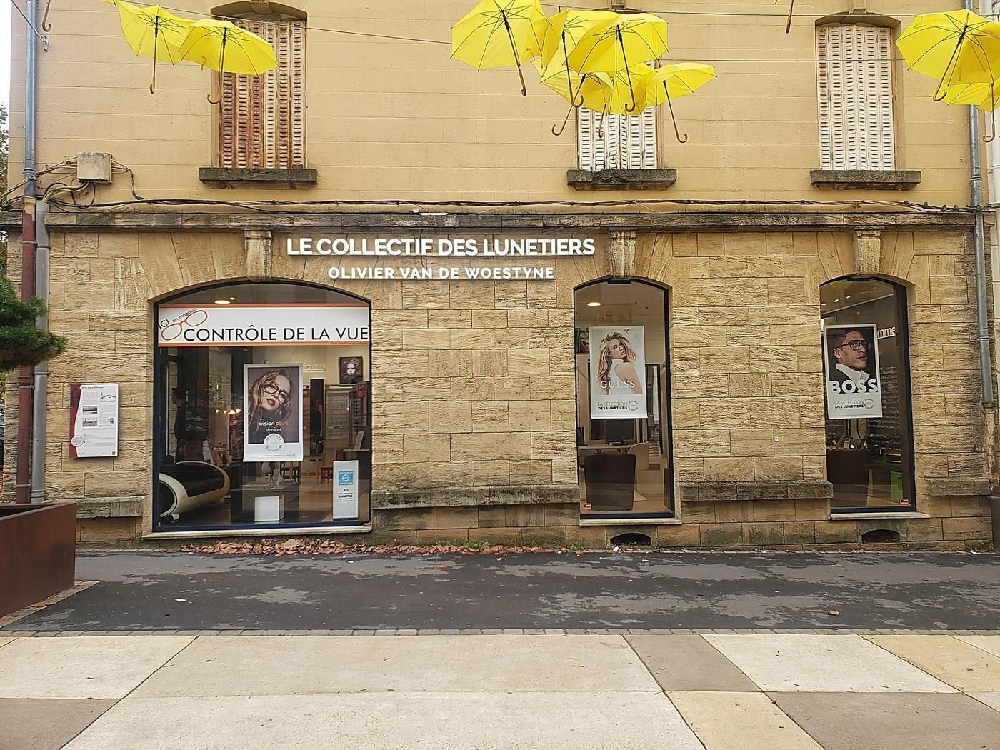


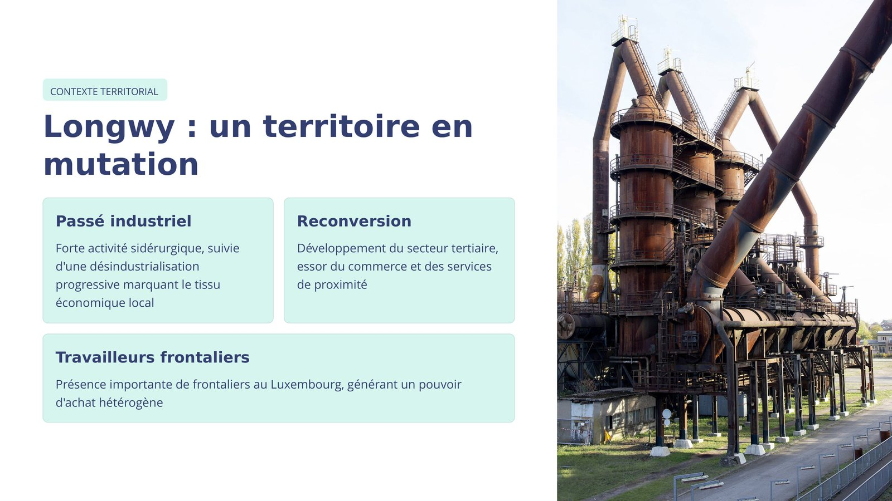
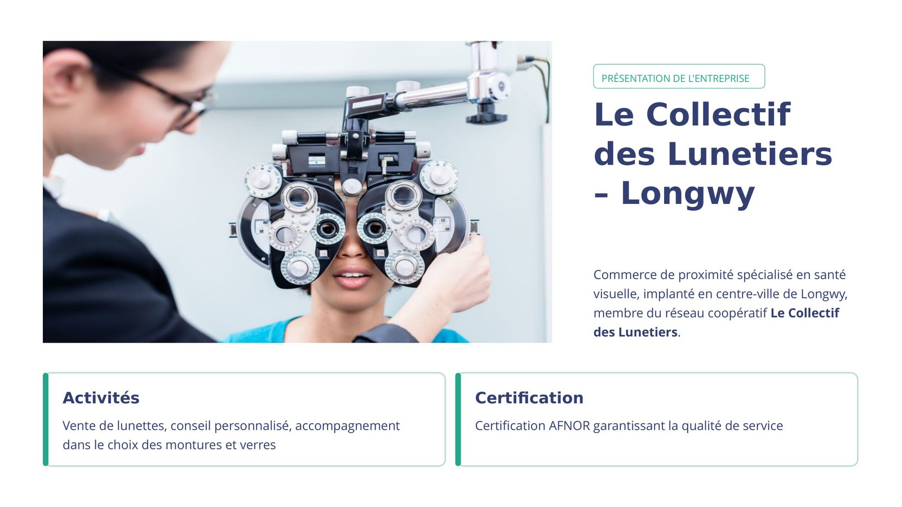
Le pivot proposé
- Passer d’un modèle centré sur la vente de lunettes à un modèle orienté santé visuelle et services personnalisés, par diversification liée.
- Santé visuelle avancée : examens approfondis, suivi régulier, accompagnement des troubles liés à l’âge.
- Services de proximité : déplacements à domicile et interventions en EHPAD.
- Différenciation responsable : réparation et entretien, montures durables, recyclage.
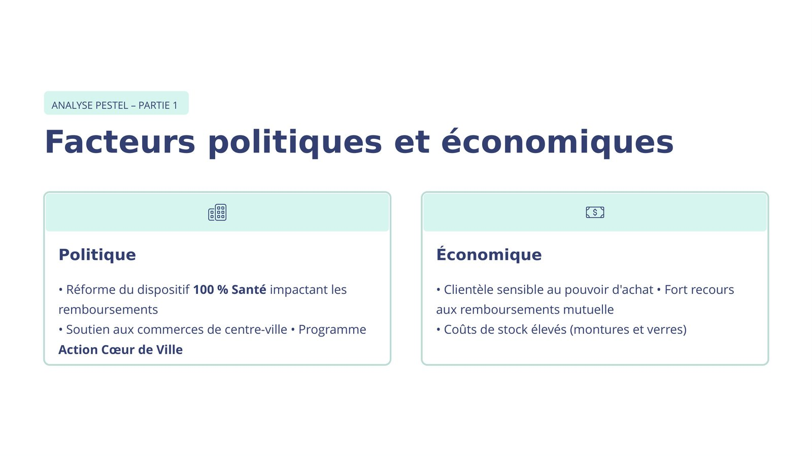
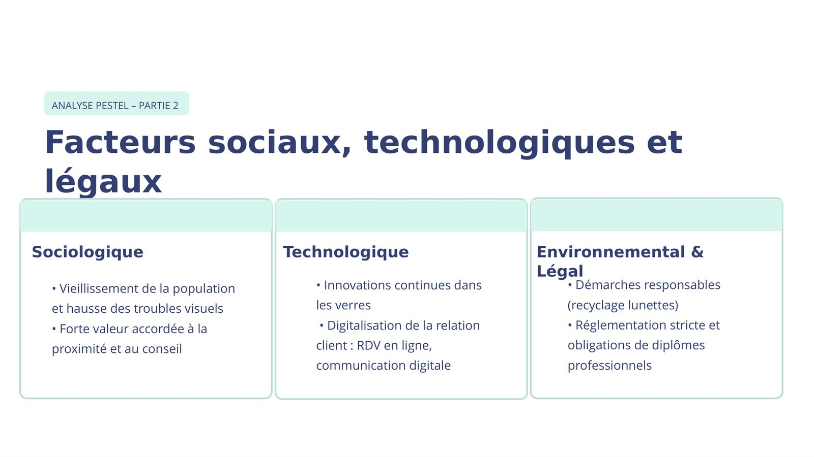
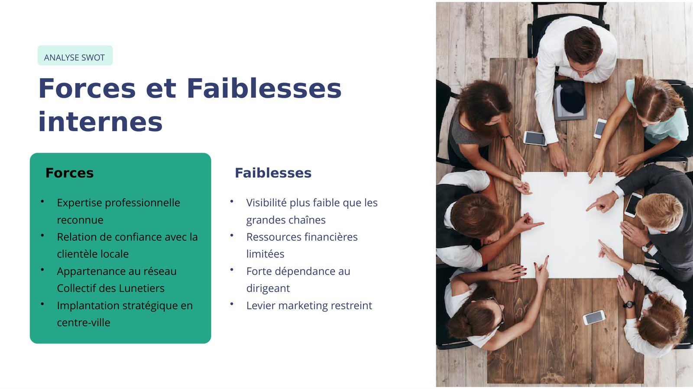
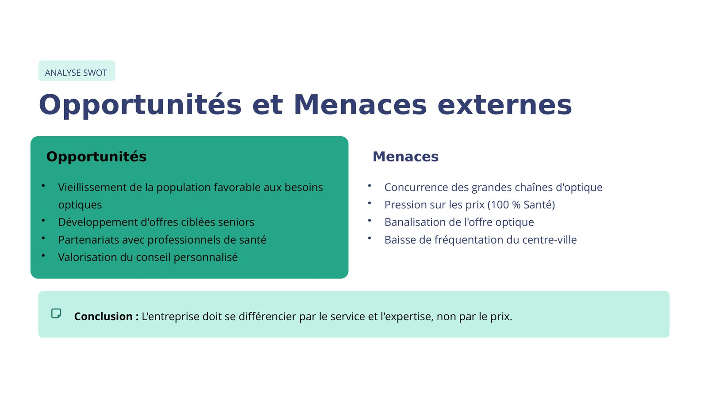
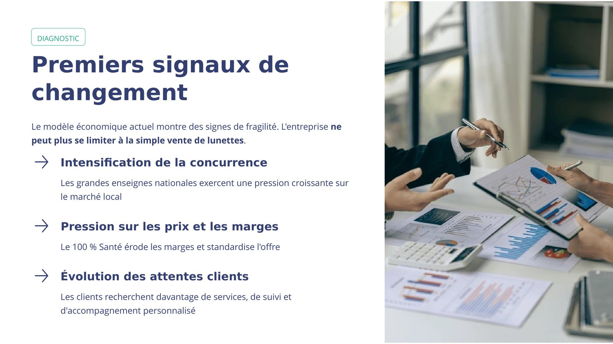
La conduite du changement
- Cartographie des parties prenantes : dirigeant, salariés, clients, professionnels de santé locaux et réseau coopératif.
- Plan de formation, communication interne et co-construction avec les collaborateurs.
- Indicateurs : taux de fidélisation, part du chiffre d’affaires issue des nouveaux services, satisfaction des clients et des salariés.
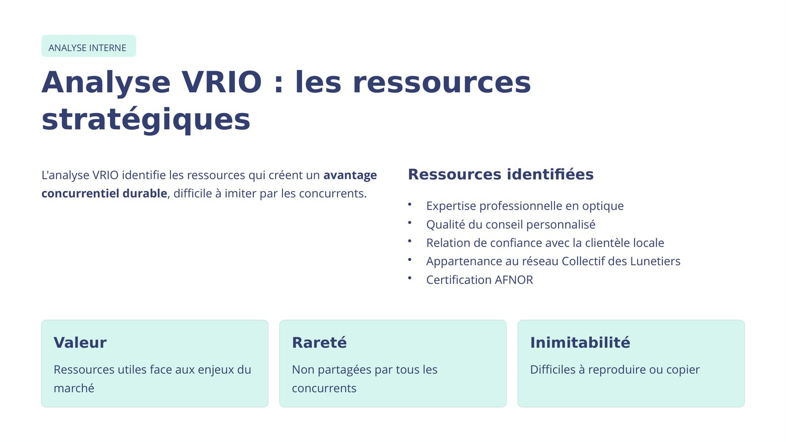
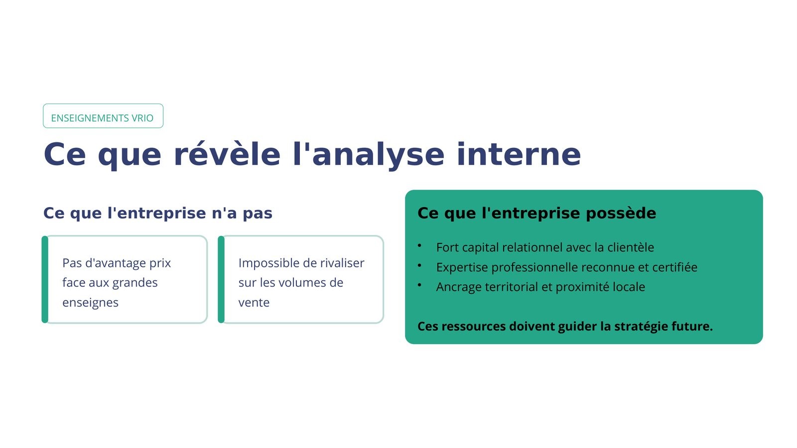
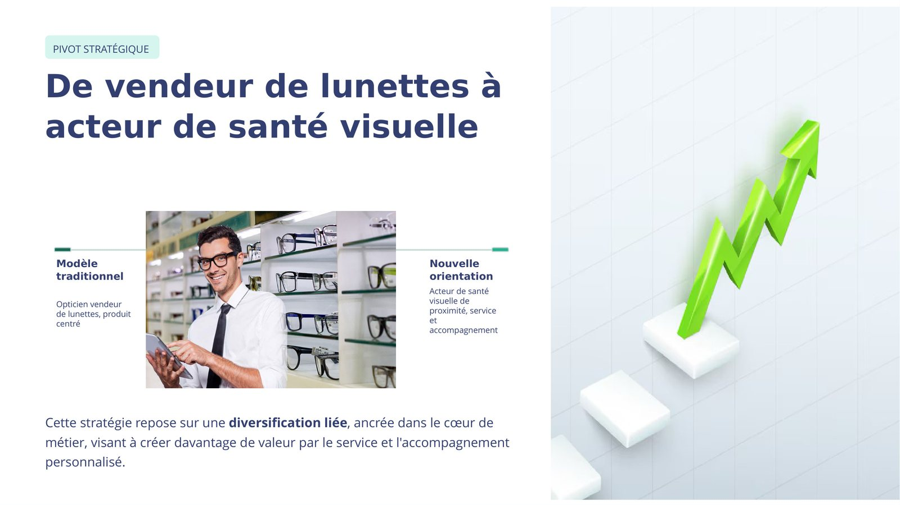
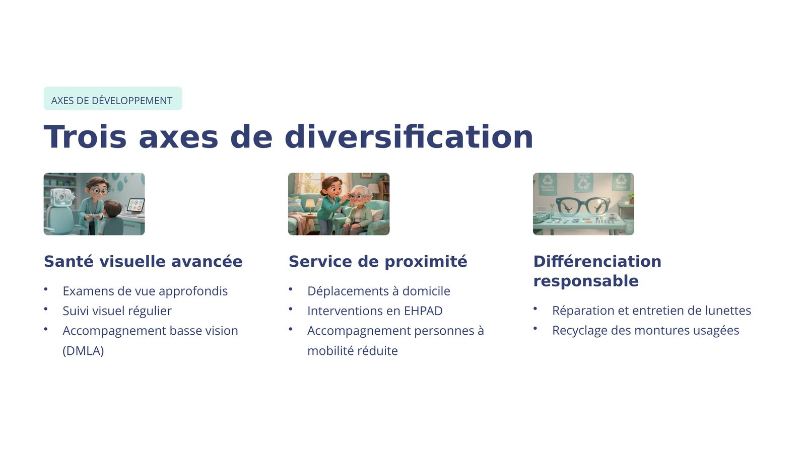
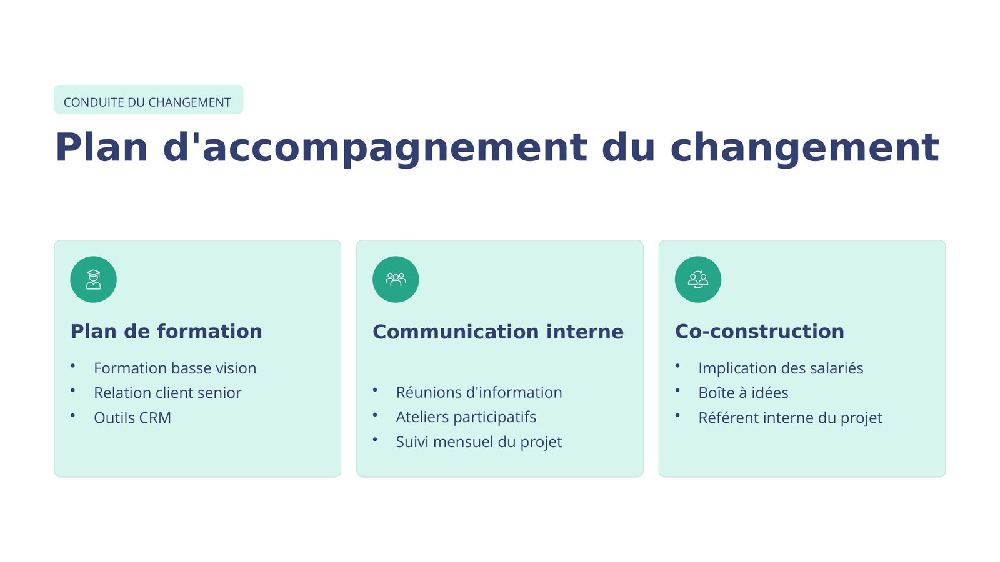
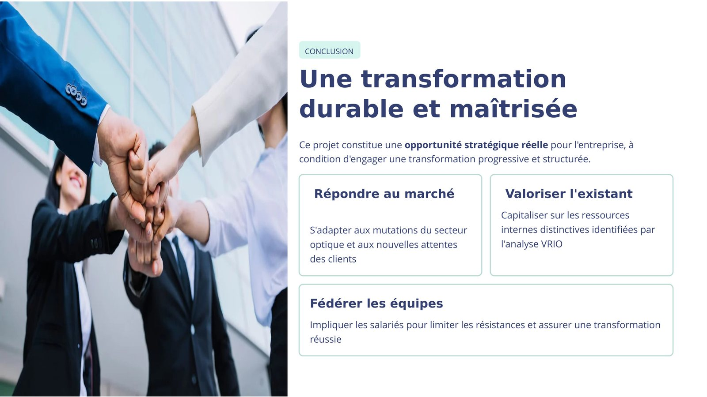
Ce que j’ai produit
- Diagnostic externe complet : PESTEL en cinq dimensions, opportunités et menaces du marché de l’optique.
- Diagnostic interne : forces et faiblesses, analyse VRIO des ressources stratégiques et premiers signaux de changement.
- Pivot stratégique proposé : passer de vendeur de lunettes à acteur de santé visuelle.
- Trois axes de diversification retenus et plan d’accompagnement du changement : formation, communication interne, co-construction avec les salariés et suivi dans la durée.
Ce que j’en retire
- Un changement réussi se construit avec les équipes, pas contre elles.
- L’analyse VRIO révèle ce qui rend une entreprise réellement difficile à copier.
- Une recommandation doit tenir compte de la taille et des moyens réels de la structure.
Outils et méthodes mobilisés
PESTELVRIOSWOTConduite du changementDiagnostic territorial